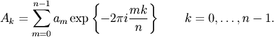
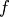
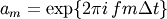
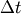
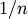
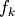
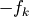
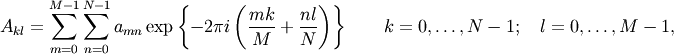

Discrete Fourier Transform (numpy.fft)¶
Standard FFTs¶
| fft(a[, n, axis]) | Compute the one-dimensional discrete Fourier Transform. |
| ifft(a[, n, axis]) | Compute the one-dimensional inverse discrete Fourier Transform. |
| fft2(a[, s, axes]) | Compute the 2-dimensional discrete Fourier Transform |
| ifft2(a[, s, axes]) | Compute the 2-dimensional inverse discrete Fourier Transform. |
| fftn(a[, s, axes]) | Compute the N-dimensional discrete Fourier Transform. |
| ifftn(a[, s, axes]) | Compute the N-dimensional inverse discrete Fourier Transform. |
Real FFTs¶
| rfft(a[, n, axis]) | Compute the one-dimensional discrete Fourier Transform for real input. |
| irfft(a[, n, axis]) | Compute the inverse of the n-point DFT for real input. |
| rfft2(a[, s, axes]) | Compute the 2-dimensional FFT of a real array. |
| irfft2(a[, s, axes]) | Compute the 2-dimensional inverse FFT of a real array. |
| rfftn(a[, s, axes]) | Compute the N-dimensional discrete Fourier Transform for real input. |
| irfftn(a[, s, axes]) | Compute the inverse of the N-dimensional FFT of real input. |
Hermitian FFTs¶
| hfft(a[, n, axis]) | Compute the FFT of a signal whose spectrum has Hermitian symmetry. |
| ihfft(a[, n, axis]) | Compute the inverse FFT of a signal whose spectrum has Hermitian symmetry. |
Helper routines¶
| fftfreq(n[, d]) | Return the Discrete Fourier Transform sample frequencies. |
| fftshift(x[, axes]) | Shift the zero-frequency component to the center of the spectrum. |
| ifftshift(x[, axes]) | The inverse of fftshift. |
Background information¶
Fourier analysis is fundamentally a method for expressing a function as a sum of periodic components, and for recovering the signal from those components. When both the function and its Fourier transform are replaced with discretized counterparts, it is called the discrete Fourier transform (DFT). The DFT has become a mainstay of numerical computing in part because of a very fast algorithm for computing it, called the Fast Fourier Transform (FFT), which was known to Gauss (1805) and was brought to light in its current form by Cooley and Tukey [CT]. Press et al. [NR] provide an accessible introduction to Fourier analysis and its applications.
Because the discrete Fourier transform separates its input into components that contribute at discrete frequencies, it has a great number of applications in digital signal processing, e.g., for filtering, and in this context the discretized input to the transform is customarily referred to as a signal, which exists in the time domain. The output is called a spectrum or transform and exists in the frequency domain.
There are many ways to define the DFT, varying in the sign of the exponent, normalization, etc. In this implementation, the DFT is defined as

The DFT is in general defined for complex inputs and outputs, and a single-frequency component at linear frequency  is represented by a complex exponential , where  is the sampling interval.
The values in the result follow so-called “standard” order: If A = fft(a, n), then A[0] contains the zero-frequency term (the mean of the signal), which is always purely real for real inputs. Then A[1:n/2] contains the positive-frequency terms, and A[n/2+1:] contains the negative-frequency terms, in order of decreasingly negative frequency. For an even number of input points, A[n/2] represents both positive and negative Nyquist frequency, and is also purely real for real input. For an odd number of input points, A[(n-1)/2] contains the largest positive frequency, while A[(n+1)/2] contains the largest negative frequency. The routine np.fft.fftfreq(A) returns an array giving the frequencies of corresponding elements in the output. The routine np.fft.fftshift(A) shifts transforms and their frequencies to put the zero-frequency components in the middle, and np.fft.ifftshift(A) undoes that shift.
When the input a is a time-domain signal and A = fft(a), np.abs(A) is its amplitude spectrum and np.abs(A)**2 is its power spectrum. The phase spectrum is obtained by np.angle(A).
The inverse DFT is defined as

It differs from the forward transform by the sign of the exponential argument and the normalization by .
Real and Hermitian transforms¶
When the input is purely real, its transform is Hermitian, i.e., the component at frequency  is the complex conjugate of the component at frequency , which means that for real inputs there is no information in the negative frequency components that is not already available from the positive frequency components. The family of rfft functions is designed to operate on real inputs, and exploits this symmetry by computing only the positive frequency components, up to and including the Nyquist frequency. Thus, n input points produce n/2+1 complex output points. The inverses of this family assumes the same symmetry of its input, and for an output of n points uses n/2+1 input points.
Correspondingly, when the spectrum is purely real, the signal is Hermitian. The hfft family of functions exploits this symmetry by using n/2+1 complex points in the input (time) domain for n real points in the frequency domain.
In higher dimensions, FFTs are used, e.g., for image analysis and filtering. The computational efficiency of the FFT means that it can also be a faster way to compute large convolutions, using the property that a convolution in the time domain is equivalent to a point-by-point multiplication in the frequency domain.
In two dimensions, the DFT is defined as

which extends in the obvious way to higher dimensions, and the inverses in higher dimensions also extend in the same way.
References¶
| [CT] | Cooley, James W., and John W. Tukey, 1965, “An algorithm for the machine calculation of complex Fourier series,” Math. Comput. 19: 297-301. |
| [NR] | Press, W., Teukolsky, S., Vetterline, W.T., and Flannery, B.P., 2007, Numerical Recipes: The Art of Scientific Computing, ch. 12-13. Cambridge Univ. Press, Cambridge, UK. |
Examples¶
For examples, see the various functions.